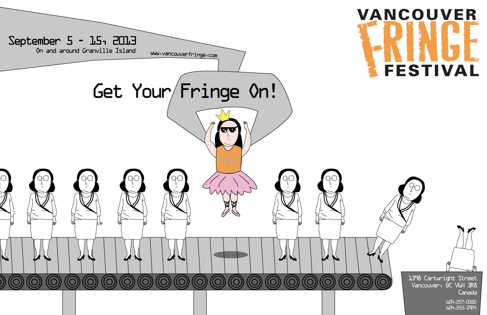

Vancouver Fringe Festival
The Vancouver Fringe is a celebration of every kind of theatre imaginable. The Fringe employs an “everyone is welcome” selection technique—the Mainstage shows are literally drawn out of a hat, giving all artists, from novice to veteran, a chance to participate.The Fringe strives to break down traditional boundaries and encourage open dialogue between audiences and artists by presenting live un-juried, uncensored theatre in an accessible and informal environment.
Date: June, 2013
Choosing one of my favorite festivals and designing its poster to capture the attention of people.
Skills: Adobe Illustrator
Involvement: 100%
-

- 